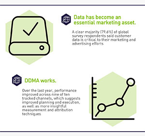
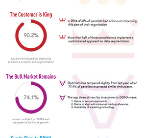

<div class="is-subgrid" id="projects"><div class="masonry-css-item is-grid-item"><a href="click me!" data-featherlight="&lt;div class=&quot;row&quot;&gt;&lt;div class=&quot;medium-6 small-12 columns&quot;&gt;&lt;p&gt;Customising a wordpress template was a first. The way it&amp;rsquo;s done is really cool, but all the same I&amp;rsquo;m glad to dabble rather than delve. What I did not know when starting this project was that Wordpress templates store their HTML in a database. Navigating the includes and tweaking the styles, the site is now, proudly, a far cry from Wen Business 2017.&lt;/p&gt;&lt;p&gt;&lt;a target=&quot;_blank&quot; href=&quot;http://www.gingerjarblue.com.au&quot;&gt;www.gingerjarblue.com.au&lt;/a&gt;&lt;/p&gt;&lt;/div&gt;&lt;div style=&quot;min-height:12em;display:flex;align-items:center;justify-content:center;&quot; class=&quot;medium-6 small-12 columns&quot; style=&quot;text-align:center;&quot;&gt;&lt;img src=&quot;../img/gjb-blog.png&quot; alt=&quot;ginger jar blue wordpress blog&quot;&gt;&lt;/div&gt;&lt;/div&gt;"><h2 class="mason-h2">Wordpress site</h2></a></div><div class="masonry-css-item is-grid-item"><a href="click me!" data-featherlight="&lt;div class=&quot;row&quot;&gt;&lt;div class=&quot;medium-6 small-12 columns&quot;&gt;&lt;p&gt;&quot;Can you make this year&amp;rsquo;s infographic,&quot; they said. &quot;Do I have a choice?&quot; I said. &quot;When can we expect this done?&quot; They said.&lt;/p&gt;&lt;p&gt;Not that I really mind, of course &amp;ndash; it&amp;rsquo;s not a bad way to spend an afternoon. Plus it&amp;rsquo;s a great way to keep up with the latest trends in data-driven marketing which is.... datalicious.&lt;/p&gt;&lt;/div&gt;&lt;div style=&quot;min-height:12em;display:flex;align-items:center;justify-content:center;&quot; class=&quot;medium-6 small-12 columns&quot; style=&quot;text-align:center;&quot;&gt;&lt;a href=&quot;../doc/GDMA_infographic_2016_insights.pdf&quot; target=&quot;_blank&quot;&gt;See full PDF here&lt;/a&gt;&lt;/div&gt;&lt;/div&gt;"><h2 class="mason-h2">GDMA Infographic 2016</h2></a></div><div class="masonry-css-item is-grid-item"><a href="click me!" data-featherlight="&lt;div class=&quot;row&quot;&gt;&lt;div class=&quot;medium-6 small-12 columns&quot;&gt;&lt;p&gt;&quot;Can anybody make an infographic?&quot; They said. &quot;Sure,&quot; I said.&lt;/p&gt;&lt;p&gt;Armed with no more than Photoshop familiarity (mainly from a web-usage rather than content creation point of view, mind), a can-do (read: naive) attitude, and a healthy dose of optimism, this infographic was a fun little project that had me out of my usual field of expertise.&lt;/p&gt;&lt;/div&gt;&lt;div style=&quot;min-height:12em;display:flex;align-items:center;justify-content:center;&quot; class=&quot;medium-6 small-12 columns&quot; style=&quot;text-align:center;&quot;&gt;&lt;a href=&quot;../doc/GDMA_infographic_2015_insights.pdf&quot; target=&quot;_blank&quot;&gt;See full PDF here&lt;/a&gt;&lt;/div&gt;&lt;/div&gt;"><h2 class="mason-h2">GDMA Infographic 2015</h2></a></div></div>